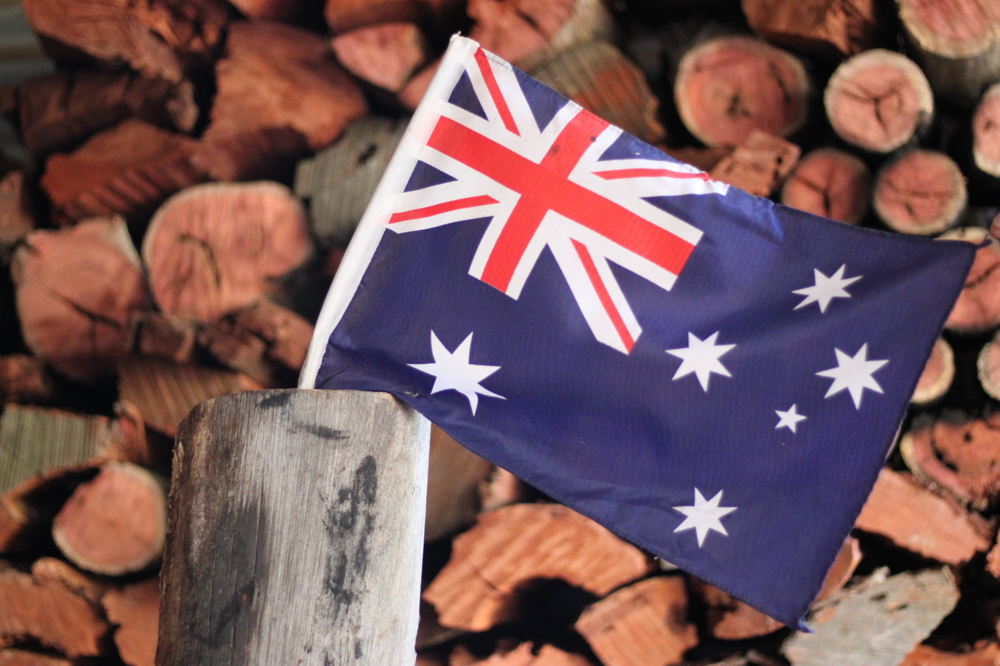

Discover the Best in Home Textiles, Sustainability, and Australian-Made Quality with Ceylon Textile Suppliers
Comfort & Style for Your Customers
Luxurious bedding and textiles for Australian and New Zealand retail outlets on a sale or return basis.

Ethical & Sustainable Practices
Commitment to sourcing high-quality fabrics and textiles from ethical and sustainable manufacturers worldwide.

Proudly Australian-Made
Quality textiles made locally in Melbourne, Australia. Supporting local business and contributing to the Australian economy.